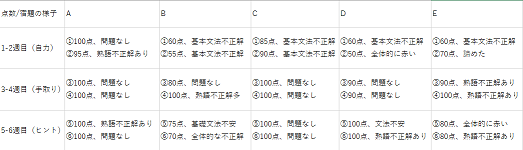

実験内容
期間：約2か月（６回の９０分授業）
対象：中学２年生男女5名
目的：おいていかれていると感じないために、楽しく、分かりやすいと思う授業はどんな要素を含むのか探る。
方法：すべて英語の授業を扱う（単元は比較、There is There are構文、長文読解）
文法等の説明など授業を行う上で最低限の解法は説明するものとする
①６回の授業を三分割し、「自力で解かせる」「ヒントを与える」「手取り足取り教える」を隔週授業する
②自力か手取り足取りかを判断する基準を、生徒からの質問、テキストの設問に対し、その返答に答えとなる語を含むか含まないかとする
③必ず授業前に宿題確認と前回授業の単元別テストを行い、結果を集計する
④各授業後の１０分休みに簡単なヒアリングを行い、感想をもらう
実験結果

A
一度覚えてしまえばできるようなことが多く、特に困らなかった。ただ、自力でやった時の宿題で、どうやるんだっけ？と迷ったところが多かった。
手取り足取りやってくれたほうが分かりやすい。迷わなくて済む
B
全体的に難しい。先生と一緒にやらないと何から始めたらいいかわからなくなる。宿題もわからないところが多かった
C
自力でやると、最初はできなくて大変だけど、自分の解法を見つけられる（自分の解法に穴があり、テスト満点ならず）
手取り足取りのとき、先生が何を言いたいのかわからなくかったことがあった
D
英語が難しい。自力では何もできない（質問出来ず、先に進まなかった）。
先生のやり方に沿って、一個ずつやった方が分かりやすかった
E
何度もテキストを見返して、どんな文法か練習した。ただどうしても自分ではできなかった。
手取り足取りだと逆にやりにくかった。自分でもできるところをなんか強制させられてた感じがした
考察
かなりばらつきのある回答になった。ただ、「単元の解法」のみだと自力で解くには限界があった。特にAとCは優等生で単元テストは滅多に落とさない。またほかの子も単元テストは苦手ではない。つまり、解法を伝えて解かせたところで分かりやすい授業にはならないのではないだろうか。逆に、手取り足取りだとやりにくい生徒もいたようだ。答えを先に知りたいのではなく、どうやって解いていくのかを覚えたいという。ただ、覚えやすいことは間違いないらしく、自分の解法と提示した解法を照らし合わせて、なんで間違ったのか自己分析できていた。ヒントのみを伝えるやり方が一番良いと考えていたが、生徒たち曰く「ヒントであ～ってなるけど、覚えられない」という。つまり、授業の最初はしっかりどういう風に解くのか、練習を一緒に行い、その後、自力でやらせてオリジナルの解法と提示する解法を照らし合わせて行くほうが良いと分かった。